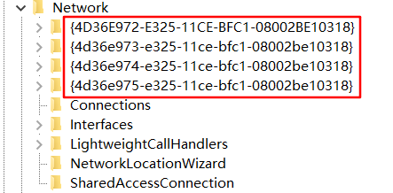

原文出处:本文由博客园博主Singvis提供。
原文连接:https://www.cnblogs.com/singvis/p/11604967.html
原文连接:https://www.cnblogs.com/singvis/p/11604967.html
目录
0. 前言
正常情况下，如果想要查看电脑的网卡IP地址或是MAC地址，直接通过界面找到网卡进行查看就有了，亦或是通过命令如linux的ifconfig得到IP等信息，那么本节教大家如何通过python的方式获取网卡的IP/MAC信息。
1. 测试环境及关键代码解释
1.1 测试环境
1.1.1 系统：
Ubuntu 16.04.6 LTS
Windows 10 x641.1.2 开发工具：
pycharm 专业版
备注：专业版支持本地远程linux调试。2. 模块介绍及演示
本次只需要用到3个模块就搞定，但也是挺费劲的咯。
- netifaces //需要安装，主要用于获取网卡接口IP/MAC等信息；
- winreg //内置模块，主要用于Windows系统通过注册表获取网卡接口键值；
- platform //内置模块，主要用于判断系统类型：如Widows、Linux、MacOS等；
2.1 platform模块使用示例
Linux系统:
import platform
platform.system()
'Linux' #返回结果Windows系统：
import platform
platform.system()
'Windows' #返回结果2.2 netifaces模块使用示例
外置模块，安装方式请参考网上，此处忽略（很简单）。
用处：用于收集网络接口等信息(IP/地址/网关)。
netiface模块定了3个函数：
def gateways(*args, **kwargs): #获取网关
代码块
def ifaddresses(*args, **kwargs): #获取IP信息
代码块
def interfaces(*args, **kwargs): #获取接口ID
代码块先看下地址族：
#!/usr/bin/env python3
#-*- coding:UTF-8 -*-
#欢迎关注微信公众号：点滴技术
#以下在Linux环境下演示
from netifaces
import pprint
pp = pprint.PrettyPrinter(indent=4) #这里使用pprint输出会更直观
pp.pprint(netifaces.address_families)
#返回结果：
{ 0: 'AF_UNSPEC',
1: 'AF_FILE',
2: 'AF_INET', #ipv4地址
3: 'AF_AX25',
4: 'AF_IPX',
5: 'AF_APPLETALK',
6: 'AF_NETROM',
7: 'AF_BRIDGE',
8: 'AF_ATMPVC',
9: 'AF_X25',
10: 'AF_INET6', #ipv6地址
11: 'AF_ROSE',
12: 'AF_DECnet',
13: 'AF_NETBEUI',
14: 'AF_SECURITY',
15: 'AF_KEY',
16: 'AF_NETLINK',
17: 'AF_PACKET', #ipv4的MAC地址
18: 'AF_ASH',
19: 'AF_ECONET',
20: 'AF_ATMSVC',
22: 'AF_SNA',
23: 'AF_IRDA',
24: 'AF_PPPOX',
25: 'AF_WANPIPE',
31: 'AF_BLUETOOTH'}
#这里大家重点关注下：AF_NET、AF_NET6
#其他的大家自己去研究下2.2.1 Linux环境下如何获取网卡口的信息
#!/usr/bin/env python3
#-*- coding:UTF-8 -*-
#欢迎关注微信公众号：点滴技术
import netifaces
import pprint
pp = pprint.PrettyPrinter(indent=4)
netifaces.interfaces()
['lo', 'ens32'] #返回结果，ubuntu系统网卡ID
pp.pprint(netifaces.ifaddresses('ens32'))
#返回结果，是一个字典，字典中又嵌套列表，所以切片的时候要注意
{ 2: [ { 'addr': '192.168.0.253',
'broadcast': '192.168.0.255',
'netmask': '255.255.255.0'}],
10: [ { 'addr': 'fe80::20c:29ff:fe5d:2f55%ens32',
'netmask': 'ffff:ffff:ffff:ffff::/64'}],
17: [{'addr': '00:0c:29:5d:2f:55', 'broadcast': 'ff:ff:ff:ff:ff:ff'}]}
netifaces.ifaddresses('ens32')[netifaces.AF_INET][0]['addr']
'192.168.0.253' #返回结果，获取到IPv4地址
netifaces.ifaddresses('ens32')[netifaces.AF_PACKET][0]['addr']
'00:0c:29:5d:2f:55' #返回结果，获取到IPv4的MAC地址
netifaces.ifaddresses('ens32')[netifaces.AF_INET6][0]['addr']
'fe80::20c:29ff:fe5d:2f55%ens32' #返回结果，获取到IPv6地址2.2.2 Windows环境下如何获取网卡口的信息
说明：windows取值相比Linux复杂多了，不能直接根据接口获取ip信息，需要先找到一串唯一的键值，然后才能依据它获取到接口IP信息，这里我先给出示例，免得大家看了一头雾水：

我的无线网卡信息：
- 无线网卡名称：WLAN
- 注册表上对应的键值：{CD94297B-D746-4494-91F7-3E40C091A0FC} //python需要知道这个
注册表需要用到了【winreg】模块，咱们还是先简单聊下Windows的注册表结构吧。
>-----HKEY_CLASSES_ROOT
>-----HKEY_CURRENT_USER
注册表 >-----HKEY_LOCAL_MACHINE
>-----HKEY_USERS
>-----HKEY_CURRENT_CONFIG
大体分为：主键--子键--键值
本次用到的函数：
winreg.ConnectRegistry(computer_name, key)：
连接注册表，computer_name=None表示本地计算机，否则用r"\\computername"表示远程计算机，key为键的链接。
winreg.OpenKey(key, sub_key, reserved=0, access=KEY_READ)：
打开指定的键，key已经打开的键，sub_key要打开的键。
winreg.QueryValueEx（key，value_name ）：
检索注册表项关联的指定值名称的类型和数据。在Windows环境如何获取接口信息：
#以下在Windows环境下
import netifaces
import pprint
pp = pprint.PrettyPrinter(indent=4)
pp.pprint(netifaces.interfaces())
#返回结果：是个列表，都是一串子键... 这一 一对应网卡来的
[ '{90788744-5655-4A9E-ADB6-A97CAE0F3B3F}',
'{02685473-BCE5-4E19-AC64-0388FA81C13F}',
'{5BBD6405-7C2E-4A78-8A09-31E03FAA3B75}',
'{95FDA148-CA04-4926-87CD-FC0DC38FF89C}',
'{D87FBBE0-11C0-49D1-A8CE-52DFC195B1B4}',
'{E31B9D7C-6E73-4773-B564-1038BDB0EDAD}',
'{A7584008-7824-4760-B2E0-1D0F483FD64E}',
'{CD94297B-D746-4494-91F7-3E40C091A0FC}', #剧透，这个就是无线网卡WLAN的唯一子键
'{652C7833-4B8D-400F-A72F-F7C89C30FD03}',
'{991AF727-67ED-11E9-B14B-806E6F6E6963}']
#请先记住我的无线网卡WLAN的键是： {CD94297B-D746-4494-91F7-3E40C091A0FC}
#后面会介绍怎么获取；
#先看下获取ipv4相关的信息：
pp.pprint(netifaces.ifaddresses('{CD94297B-D746-4494-91F7-3E40C091A0FC}')[netifaces.AF_INET]
#返回结果
[ { 'addr': '172.20.18.37',
'broadcast': '172.20.18.255',
'netmask': '255.255.255.0'}]
#获取ipv4地址
pp.pprint(netifaces.ifaddresses('{CD94297B-D746-4494-91F7-3E40C091A0FC}')[netifaces.AF_INET][0]['addr'])
'172.20.18.37' #返回结果3. 完整代码
文件1：win_get_key.py
说明：windows系统上运行使用
#!/usr/bin/env python3
#-*- coding:UTF-8 -*-
#欢迎关注微信公众号：点滴技术
from netifaces import interfaces
import winreg as wr
#定义获取Windows系统网卡接口的在注册表的键值的函数
def get_key(ifname):
#获取所有网络接口卡的键值
id = interfaces()
#存放网卡键值与键值名称的字典
key_name = {}
try:
#建立链接注册表，"HKEY_LOCAL_MACHINE"，None表示本地计算机
reg = wr.ConnectRegistry(None,wr.HKEY_LOCAL_MACHINE)
# 打开r'SYSTEM\CurrentControlSet\Control\Network\{4d36e972-e325-11ce-bfc1-08002be10318}'，固定的
reg_key = wr.OpenKey(reg , r'SYSTEM\CurrentControlSet\Control\Network\{4d36e972-e325-11ce-bfc1-08002be10318}')
except :
return ('路径出错或者其他问题，请仔细检查')
for i in id:
try:
#尝试读取每一个网卡键值下对应的Name
reg_subkey = wr.OpenKey(reg_key , i + r'\Connection')
#如果存在Name，写入key_name字典
key_name[wr.QueryValueEx(reg_subkey , 'Name')[0]] = i
# print(wr.QueryValueEx(reg_subkey , 'Name')[0])
except FileNotFoundError:
pass
# print('所有接口信息字典列表： ' + str(key_name) + '\n')
return key_name[ifname]
if __name__ == '__main__':
print(get_key('WLAN'))文件2：python_netifaces.py
说明：在Window和Linux系统上运行使用
#!/usr/bin/env python3
#-*- coding:UTF-8 -*-
#欢迎关注微信公众号：点滴技术
from netifaces import ifaddresses ,AF_INET , AF_INET6
import platform
#定义获取ipv4信息的函数
def get_ip_address(ifname):
#判断系统是否为Linux
if platform.system() == "Linux":
try:
#返回ipv4地址信息
return ifaddresses(ifname)[AF_INET][0]['addr']
except ValueError:
return None
#判断是否为Windows系统
elif platform.system() == "Windows":
#调用函数get_key，获取到了网卡的键值
from Tools.win_get_key import get_key
key = get_key(ifname)
if not key:
return
else:
#返回ipv4地址信息
return ifaddresses(key)[AF_INET][0]['addr']
# 判断是否为Windows系统
elif platform.system() == 'MacOS':
pass
else:
print('您的系统本程序暂时不支持，目前只支持Linux、Windows、MacOS')
#定义获取ipv6信息的函数，与上面函数大体一致，不备注
def get_ipv6_address(ifname):
if platform.system() == "Linux":
try:
return ifaddresses(ifname)[AF_INET6][0]['addr']
except ValueError:
return None
elif platform.system() == "Windows":
from Tools.win_get_key import get_key
key = get_key(ifname)
if not key:
return
else:
return ifaddresses(key)[AF_INET6][0]['addr']
elif platform.system() == 'MacOS':
pass
else:
print('您的系统本程序暂时不支持，目前只支持Linux、Windows、MacOS')
if __name__ == '__main__':
print('你的ipv4地址是：' + get_ip_address('WLAN'))
print('你的ipv6地址是：' + get_ipv6_address('WLAN'))
#Windows系统下返回的结果：
你的ipv4地址是：192.168.100.203
你的ipv6地址是：240e:64:5222:2000:5d68:304d:6133:ab45Linux系统下返回结果：
...省略...
...代码省略(同上)...
if __name__ == '__main__':
#切换到远程Linux环境下,修改如下：
print('你的ipv4地址是：' + get_ip_address('ens32'))
print('你的ipv6地址是：' + get_ipv6_address('ens32'))
#Linux系统下返回的结果
你的ipv4地址是：192.168.0.253
你的ipv6地址是：fe80::20c:29ff:fe5d:2f55%ens324. 碎碎语
本次篇幅有点多，我是采用分解方式进行讲解，希望对大家有用，而不是一把把脚本贴上来。
我写的每一篇文章，希望对于网络攻城狮来说，能够如何运用python更好的提高工作效率和运维，而不仅仅局限在传统的局域网、广域网等，技术再迭代更新，个人的技能思维更需要贴合时代，共同进步。
4.1 官方参考链接：
netifaces模块:
https://pypi.org/project/netifaces/
winreg模块:
https://docs.python.org/3/library/winreg.html#exception-changed如果喜欢的我的文章，欢迎关注我的公众号：点滴技术，扫码关注，不定期分享
如果喜欢的我的文章，欢迎关注我的公众号：点滴技术，扫码关注，不定期分享